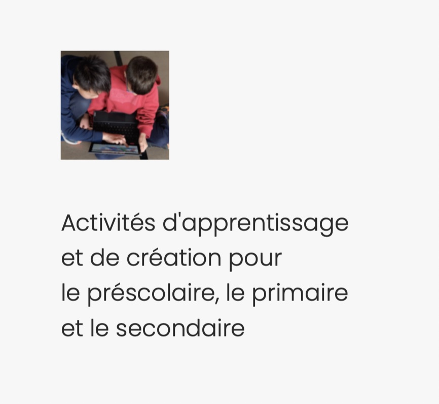
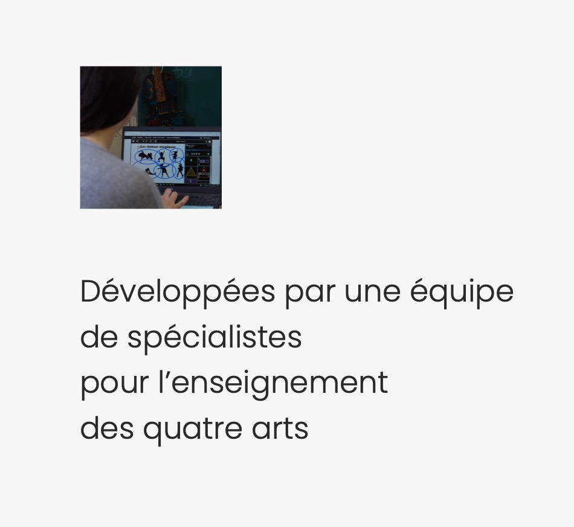
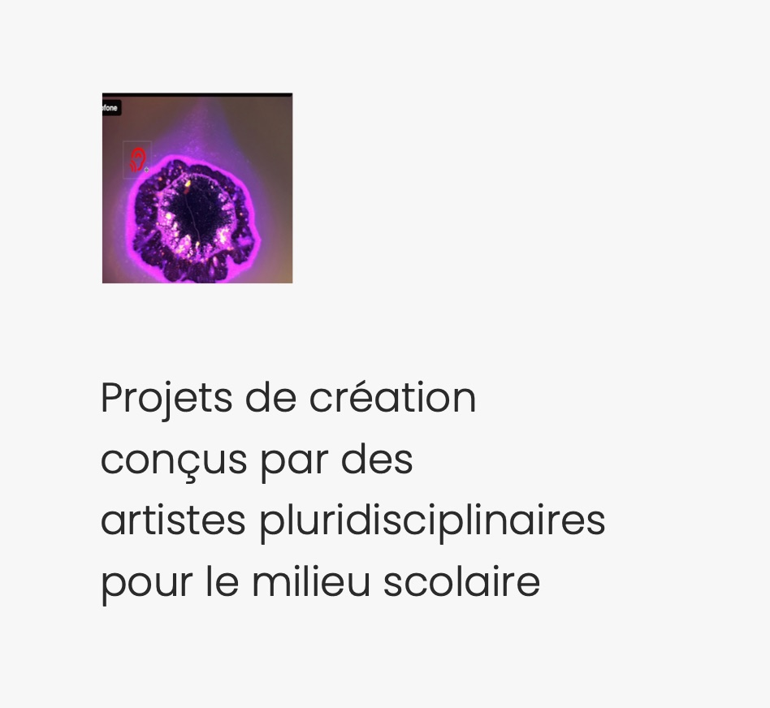

Activités d'apprentissage et de création pour le préscolaire, le primaire et le secondaire
créer | interpréter | apprécier

Activités d'apprentissage et de création pour le préscolaire, le primaire et le secondaire

Développées par une équipe de spécialistes pour l'enseignement des quatre arts

Projets de création conçus par des artistes pluridisciplinaires pour le milieu scolaire
« C'est une expérience dont je vais me souvenir toute la vie. »
« Je crois qu'avec fonofone nous avons un outil léger, ludique et sexy. Les quelques mois passés à l'expérimenter avec mes élèves m'en ont convaincue. »
« Fonofone, c'est une application vraiment cool pour inventer de la musique parce que si on apprend à écouter, on réalise qu'il y a de la musique dans tous les sons. »
« Je veux vous remercier pour l'expérience incroyable que ma classe et moi avons vécue à travers les ateliers Fonofone. Mes élèves sont beaucoup sortis de leur zone de confort et ont beaucoup appris durant tout le processus. »
« L'application Fonofone est un outil surprenant et très intuitif procurant à chaque élève un espace de création libre et riche. »
« Je recommande fortement ces ateliers à toutes les personnes désirant réaliser des projets de création musicale à l'école. Ils sont adaptés à tous les niveaux d'enseignement. »